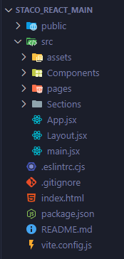
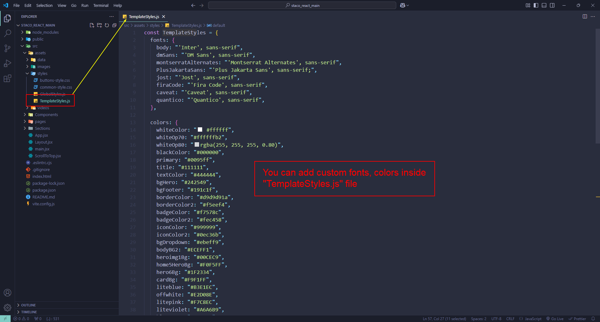
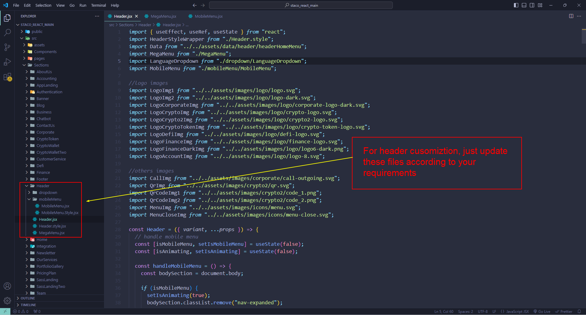
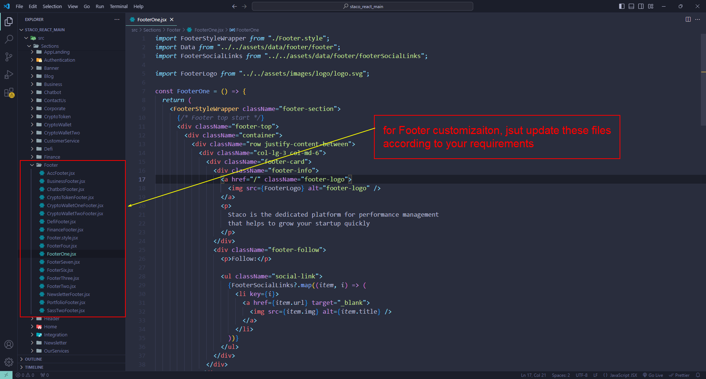
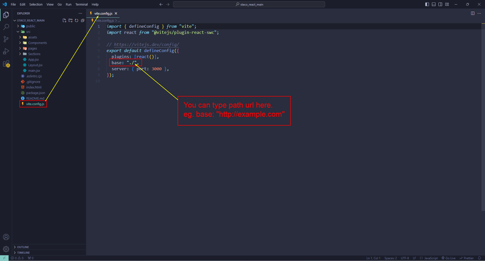

Staco - SaaS Startup Business Landing Page ReactJs Template
Thank you for purchasing our template. This documentation file covers all the information needed to install and use this template. So before you get started, please check out these documentation files carefully. If you have any problem with understanding anything in the documentation and about installing template, please contact directly from our themeforest account. Our support team always ready to help you quickly.
Template Installation
You will get Staco.zip file form Themeforest.
- Unzip Staco.zip file.
-
You will get two files
- documentation
- staco_react_main
Staco react version installation
- Open the folder staco_react_main with code editor
- Open terminal of the code editor
-
run
npm installon terminal( It takes some times for installing dependencies of npm according to your internet speed. )
- run
npm run devon terminal -
Then , please go to address
localhost:3000on your browser and You will find default landing page.
If node.js is not installed in you local machine then please consider to download it form node js official website here: Node.js
Folder Structure
React js version folder structure
React js version folder structure overview
src/main.jsx
src/main.jsx main file contains the root of the app.
src/App.jsx
src/App.jsx App file contains the routing of the app.
src/Layout.jsx
src/Layout.jsx Layout file contains the layout of
page.
src/assets
src/assets In assets folder, you will find the data,
images and styles folder. In data folder, you will find all of
data uses in this template. You will also find the image folder,
where all of the images are kept on the basis of the specific
page. In styles folder, you will find global styles and template
styles writen with styled-components. In videos folder, you will
find all the videos.
src/components
/components folder is most importantly use, you will
find components
src/section
src/section Here all the section include that’s we
are used in our template like banner
src/pages
src/pages
In pages folder you will find the all pages
template Styles
Fonts
body: "'Inter', sans-serif", dmSans: "'DM Sans', sans-serif", montserratAlternates: "'Montserrat Alternates', sans-serif", jost: "'Jost', sans-serif", firaCode: "'Fira Code', sans-serif", caveat: "'Caveat', sans-serif", quantico: "'Quantico', sans-serif"
Colors
whiteColor: " #ffffff", blackColor: "#000000", primary: "#0095ff", title: "#111111", textColor: "#444444", bgHero: "#242549", bgFooter: "#191c1f", borderColor: "#d9d9d91a", borderColor2: "#f5eef4", badgeColor: "#f7578c", badgeColor2: "#fec458", iconColor: "#999999", iconColor2: "#0ec36b", bgDropdown: "#ebeff9", bodyBG2: "#ECEFF1", heroimg1Bg: "#00CEC9", home5HeroBg: "#F0F5FF", hero6Bg: "#1F2334", cardBg: "#F9F1FF", liteblue: "#B3E1EC", offwhite: "#E2D08E", litepink: "#F7C8EC", liteviolet: "#A6A6B9", blueGray: "#EEEFFB", btnColor: "#FFDA54", btnTextColor: "#050038", v6BG: "#ECF1F1", primary6: "#B2EDA1", primary6Deep: "#44C486", v6templateColor: "#004D42", aeroBlue: "#D1FDE9", v8Title: "#0DAC81", v8Title2: "#AAEF69", v8SeconderyColor: "#1A7870", chatbotPrimary: "#041646", chatbotGreen: "#061C23", chatbotGray: "#F7F5F2", templateDark: "#0D1014"
You can update fonts, colors using "TemplateStyles.js" file.
Customization
You can update any components, sections according to your requirements. For customizing, you have to update particular file as you need.
Header
Footer
Deploy
Staco react version Deploy
Staco React js static build
- Navigate to Staco_react_main
- You can type path url inside "vite-config.js" file. If you are deploying Staco react app to server you can type domain/custom path url inside base in "vite-config.js" file. 
- run command
npm run build -
after the build is done you will get a folder called
dist. - now you can host that folder anywhere you want (If you are deploying Staco react app to server, you have to type domain/custom path url inside base in "vite-config.js" file before build).
- For more information you can visit Deploying a Static Site
netlify
- Navigate to Staco_react_main
- run command:
-
npm run buildafter the build process is done. you will find a new folder called
/dist npm install netlify-cli --save-dev-
netlify loginafter the login process is done
- run command:
netlify deploy - choose + Create & configure a new site
- give you site name
-
path to deploy:
./distafter the build process once done, run command:
netlify deploy --prod- path to deploy:
./dist - for more information: How to deploy React Apps in netlify
You will find react.js app deployment complete guide here: React.js app Deployment
vercel
-
Navigate to Staco_react_main
for deploying to vercel using terminal you need to install vercel-cli on your machine Read more...
npm install vercel --save-dev- run command:
vercel loginvercelvercel --prod
After the login process is done. run command:
after the deploy process is done. then deploy the production version
For more information How to Deploy a React.js Site with Vercel
Features
- Modern Design
- Clean & Simple Design
- Based on styled components
- Component base styling for making page load superfast
- Sass with styled Components
- Reusable components for highly customization
- Scalable project architecture
- Beautiful color and Typography
- Semantic Markup
- Compatible with Bootstrap 5.3.3
- Free Google Fonts
- Free Icons
- 100% Customizable Codes
- Well Documented
- Cross Browser Compatible with IE11+, Firefox, Safari, Opera, Chrome
- + Many More
Source and Credit
reactreact-domreact-router-domreact-helmet-asyncreact-iconsstyled-componentsreact-tabs@iconify/reactanimate.cssanimate.css-reactanimejsd3-easereact-circular-progressreact-circular-progressbarreact-countdownreact-countupreact-countup-animatereact-intersection-observerreact-masonry-cssreact-movereact-parallaxreact-responsive-masonryreact-slickreact-sticky-boxscroll-outslickslick-carouselsplittinguse-typing-headlinesvenobox
Images
Note: All images are just used for Preview Purpose Only. They are not part of the template and NOT included in the final purchase files.